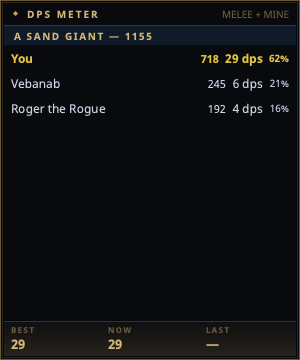

DPS Meter¶
The DPS Meter is a frameless overlay showing live damage breakdowns: one header per fight target with the group's total damage, one row per attacker beneath it, and a session Best / Current / Last footer.

Open it from the tray → DPS Meter.
Reading it¶
Each attacker row shows, left to right:
- Name (with level when known from the shared
/whoroster — see Sharing) - Total damage dealt to that target this fight
- Trailing DPS — damage over the last 12 seconds, the same window EQTool uses, so numbers are comparable across tools
- % of the group total
Your own row is highlighted. So is your pet's, which is marked (pet) —
see below.
The title bar carries the counting mode (MELEE, MELEE + MINE, ALL) so
an empty caster row reads as a filter rather than a broken parser. Change it
in Settings → DPS Meter.
Upgrading and playing a caster?
Your existing setting is carried over as-is, so a config from 2.4 or earlier still counts melee only. Set Count damage from to melee + my spells to have your own spell damage counted — see below.
Casters: how spell damage is counted¶
EverQuest logs spell, proc and damage-over-time damage as
Gorenaire was hit by non-melee for 1250 points of damage.
That line names no attacker at all — not you, not the wizard next to you. So a meter can either drop it (and show a caster nothing) or credit it to you (and pad your row with the whole raid's nukes). nParse+ does neither by default. It uses the one signal your own log gives: your casting.
Non-melee damage that lands while you are casting, or within the credit
window after, is counted as yours. Damage that arrives cold is not. With
All damage selected it is still added to the target's group so the
percentages stay honest, listed under (spell damage) rather than under
your name.
What this cannot do, said plainly:
- Damage shields and weapon procs follow no cast of yours, so they land in the unattributed bucket. A tank's proc damage is under-counted.
- Two casters nuking the same target inside one window are indistinguishable. This is a large improvement over "always you", not a proof.
- Damage over time never appears, in any mode. Project 1999 does not log DoT ticks at all — the per-tick message is a 2003 addition that was removed for not being classic — so no parser on P99 can show it.
Pets¶
Your pet keeps its own row, marked Vexer (pet) and highlighted like
yours. Two rows rather than one is deliberate: whether the pet is holding up
(and whether it is still alive) is worth seeing on its own, and merging the
rows would make the per-row DPS and biggest hit meaningless.
By default the pet is counted as its own attacker, the way every other row is: your session Best / Now / Last footer is your own hands. If you read the pet as part of your output — a magician, necromancer, beastlord or charming enchanter usually does — turn on Count pet damage as mine in Settings → DPS Meter and the footer becomes the two of you together. It is off by default because that is a question about how you want to count, not something the meter should decide for you.
The pet is recognised by name, tracked through summon, reclaim, death and charm break. Another player's pet is never counted as yours; a charmed pet sharing a mob's name is not either.
When a pet dies part-way through a fight its row stops being marked as yours — you no longer have a pet — but the damage it already did stays in your footer for that fight. A pet you resummon mid-fight gets its own row, and both count.
Copying a parse¶
Right-click the meter and pick Copy parse for '<target>' to put that fight on your clipboard, ready to paste into raid or guild chat:
Fight Details: Lady Vox Dmg: 41230 You 34% DPS:412 DMG:14018 / Vebanab 28% DPS:339 DMG:11544 / ...
Right-clicking an attacker row copies that row's whole fight; right-clicking
anywhere else offers each fight on screen. DPS: is the whole-fight number,
not the trailing-window one the row displays — a parse is a statement about
the fight, not about its last twelve seconds. The format, separators
included, is EQTool's, so a parse pasted from nParse+ reads the same as one
pasted from EQTool in the same channel.
When a notable NPC in your zone dies, the parse is copied automatically — raid targets, in other words, not trash. It is taken at the moment of the kill, so killing a boss and zoning straight out still leaves the parse on your clipboard even though the meter clears when you zone. Kael's faction giants are excluded: they are listed as notable, and they die by the hundred. Turn this off with Copy parse on notable kills in Settings → DPS Meter; the right-click copy stays available either way.
Fights leave the meter Attacker dropoff seconds after the last hit
(40 s by default), so a manual copy is only possible while the group is still
on screen. The automatic copy on a notable kill is what covers the raid case.
How fights are tracked¶
- A fight starts when damage lands on a target and ends when the target dies or the fight goes quiet.
- A fight must last more than 20 seconds to count toward the footer, so one lucky crit on a rat doesn't top your session.
- Switching characters clears the meter: the rows on screen belong to the character who just left.
Best, Now and Last¶
The footer's three cells are different questions.
Best is a lifetime record, kept per character and saved with that character's profile, so it survives a restart — a level 60 rogue's best hit says nothing about your level 12 cleric, and switching characters swaps the number rather than merging it.
Now is this session; Last is the previous one. Right-click the meter for the three controls that move them:
| Action | What it does |
|---|---|
| Start new session | Now becomes Last, and a fresh Now starts. |
| Clear last session | Drops Last. |
| Reset best… | Clears this character's lifetime Best, best damage and highest hit. It asks first, and leaves Now alone. |
Unlike Best, Last is not saved — it is a within-session record, and a restart drops it.
Changing a counting rule clears Best
A best DPS averaged over 12 seconds is not comparable to one averaged over 4, and a best taken while your spell damage counted is unreachable once the meter is set to melee only. So moving one of those rules in Settings → DPS Meter clears Best and Now, and the cleared value is what gets saved. A stored Best also records which rules it was measured under, so a record taken under rules that have since changed is dropped rather than restored — including for a character who was not logged in when you changed them.
Notes¶
- Only what the log reports can be counted: your hits, your pet's hits, and melee around you. Other players' spell damage isn't attributable from your log, so raid-wide totals are approximate — same limitation as every log parser.
- Counting rules live in Settings → DPS Meter and all apply without a restart.
- Window position, opacity, always-on-top, and click-through persist in Settings → Windows.